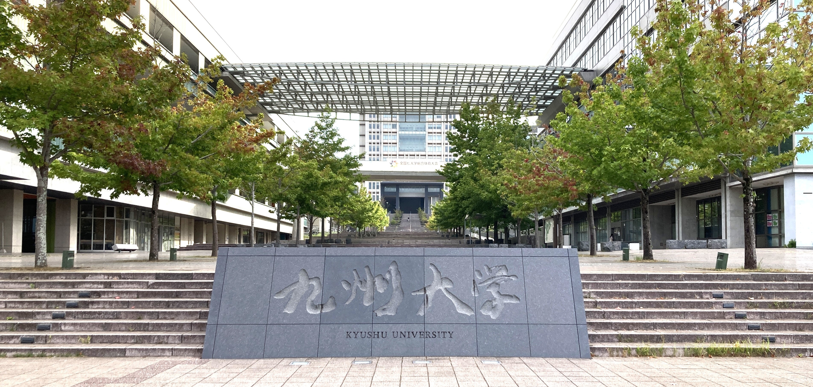
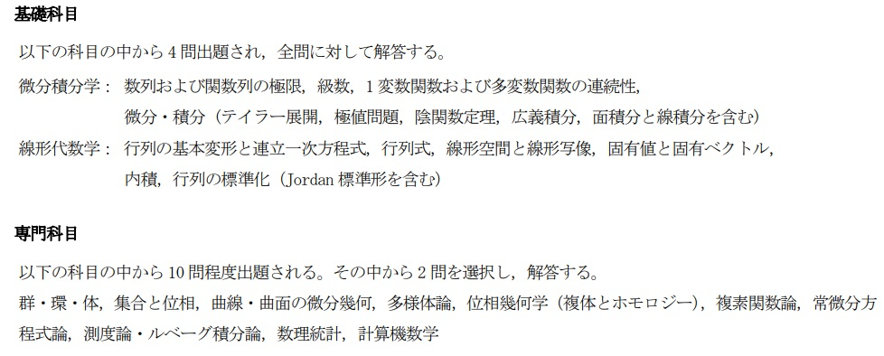
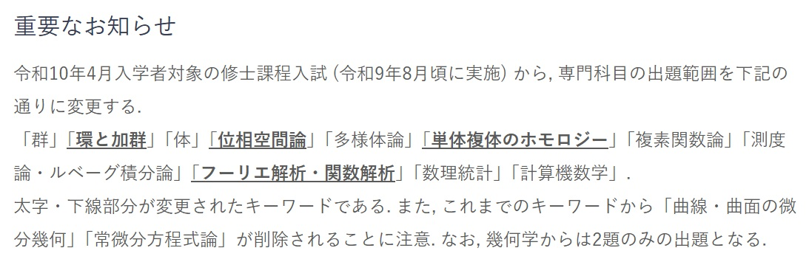
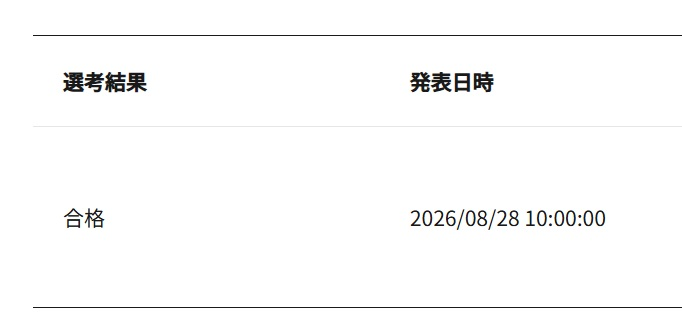

2026年8月29日 13:08

本稿は2026年8月18,19日に行われた九州大学数理学府 (数理学コース) の合格体験記である。それなりに分量があるので、興味のある箇所をつまみ食いして読んでほしい。
ざっくりと私について述べるとこんな感じ。
ちなみに数学力は結構低いです (具体的に言うと、院進拒否をされるくらい笑)。
ここではマス・フォア・イノベーション連係学府、MMAコースについては書かず、数理学コースについてのみ書きます。来年から形式が変わってしまう可能性だって十分に有り得るので、最新の情報は受験者各々が確認するようにしてください。
九大数理の院試は2日間あって、1日目に筆記試験、2日目に口頭試問が行われます。
筆記試験は9:00から基礎科目 (2時間半で全問必答)、13:00から専門科目 (2時間で11題中2題選択) が行われます。それぞれの出題範囲は

のようになっていますが、2027年の夏に行われる2028年度入試から「専門科目の出題範囲を変更する」と公式に発表されています。来年度の受験を考えている人は注意しましょう。

口頭試問は午前組と午後組に分けて行われます。この振り分けは1日目の筆記試験の会場に貼られているので、確認をしておきましょう。ちなみに筆記のできとは無関係に口頭試問へ進むことができます。時間は15分程です。
出題内容に関しては公式に発表されていないので書きません。
大まかなスケジュール感は次の通りです。
(日時は2027年度入試のもの)
受験者は出願までに志望教員と面談をしておくといいと思います。私は5月頃にしました。
2027年度入試のデータをまとめておきます。こちらも数理学コースのみの記載です。
データのソース: 定員と合格者数は公式情報です。志願者数は試験会場に貼り出されていた座席表の人数、受験者数は当日会場にいた人を数えたものです。遅刻者などを見落としている可能性があるので、受験者数には若干のズレがあるかもしれません。
また、例年の状況を考察するのに有用なリンクを掲載しておきます。
4回生の5月中旬から15年分の過去問を使って対策しました。問題集をやる時間はなかったので、過去問を解く中で必要な知識やテクを補っていく感じです。
| 5月 | 6月 | 7月 | 8月 | |
| 基礎科目 | 1周目 | 2周目 | 3周目 | |
| 専門科目 | $\times$ | 1周目 | 2周目 | |
はじめの1ヶ月半で基礎科目の過去問を15年分解きました。計算主体の問題は線形・微積ともに大体できましたが、抽象的な線形代数の議論、級数や広義積分の評価が上手にできませんでした。ちなみに、初見で15年分解いた段階で基礎科目は平均56%でした。
この段階では知識が整理されていませんでした。そこで、2回生のころに読了していた [川久保], [吹田], [笠原] 等を読み直して知識を整理し直していました。その際、問題を解くのに必要な知識だけではなく、その知識が属する分野を丸ごと復習していました。たとえば、対角化が出てきたら、対角化可能条件をできるだけ思い出して、Jordan標準形と最小多項式との関係まで復習する感じです。
この1ヶ月は専門科目を15年分解きながら、基礎科目の2周目を行いました。正直、専門はまったく解けませんでした。そもそもあんまり理解しておらず、演習量が圧倒的に少なかったので定石みたいなものをほとんど知りませんでした (臨界点が Lagrange の未定乗数法で過不足なく拾えることや、極座標が $S^{1}$ の局所座標を定めること、群に関するいろんなテクなど)。ちなみに、初見で15年分解いた段階で専門科目は平均49%でした。
問題文が何を言ってるか分からないこともあったので、そういう部分は [雪江] や [Tu], [河野] を読んだり、ネットで調べたりして何とか理解していました。1周目をやる中で意外と使う道具が固定化されていることに気づいたので、その概念が出てくる分野の復習に努めました。後は試験まで1ヶ月ほどしかなかったので、(3)などの重めの問題で AI に聞いても何を言っているか分からないものは潔く捨てることにしました。
線型や微積は計算力が大事なので、基礎科目の2周目は1周目で合っていた問題ももう1度解きました。2周目段階で基礎科目の15年平均が69.7%でした。正直、強烈に記憶に残っているもの以外は忘れていたので、頭の使い方が少し身についたのかな～という感じです。逆に1周目に合っていたのに2周目で間違えた問題もちょくちょくあったので、その原因究明を一生懸命に行っていました。
直前2週間は「新しいことをするのもなぁ」と思ったので、復習の方針でいくことにしました。具体的には、基礎科目の3周目 (2周目でミスったもののみ) と専門科目の2周目、過去問には出ていないけれど出題範囲になっている数学の復習と知識整理を行いました。その際に復習した内容は以下の通りです。
Jordan標準形 / 曲線の長さ / 級数 / 多変数のTaylor展開 / 逆関数定理と陰関数定理 / 線積分と面積分
多分、線積分と面積分の復習をする必要はなかったと思います。
14:00くらいに九大に到着しました。友人の $\mathcal{M}$ と合流し、願掛けのために近くの神社に連れていかれます。その神社が太郎丸神社。「受かりに来てるのに、この名前は縁起が悪いやろ…」と思いながら一緒に参拝しました。
解散して糸島のホテルにチェックイン。明日のために復習をしました。翌朝は7:00に起きたかったので0:00ごろに布団に入りましたが、緊張でなかなか眠れず、堀大輔がテキーラを15杯飲まされる動画を見てしまったので結局1:00くらいに寝ました。
7:00頃に起床。変な時間に寝ているので有り得ないくらい眠かったです。とりあえずカーテンを開けて太陽を浴びます。やや冷ためのシャワーで目を覚まして、レストランへ行きました。
8:00頃にバスに乗り、10分くらいで九大に着きました。ぼーっとしてたら8:20になって会場が開錠されたので、指定された席に着きます。
8:45頃から解答用紙と問題冊子が配られました。解答用紙はB4縦のフォーマットで、計算用紙は無しです。この時に次のようなアナウンスがありました。
正直、試験中は沢山のドラマがありましたが、答案の詳細については伏せておきます。代わりに筆記試験の出来を書いておくと、次のようになりました。
今年は基礎も専門も過去に類を見ないほど易化しており、専門で取りこぼした自覚があった僕は「もしかしたら落ちてるかも...」と思っていました。普通に考えたら総合で78%取れてて落ちるわけないんですけどね。
昨日と同じような朝を過ごし、8:20に控室へ到着しました。控室は2つありましたが、この時間では両方とも内部生が数人いるくらいです。8:40くらいになると結構人が集まってきました。服装は内部生が私服、外部生がスーツという感じでした (群れてワチャワチャしていたのが内部生、寡黙に1人で復習をしていたのが外部生、という私の推測によります)。多分、ファッション点はないと思うので服装はなんでもいいと思います。
8:45くらいから試験の説明がありました。スマホやタブレットの通信端末はすべて電源を切ってカバンに入れるようにと指示を受けます。おまんじゅうさんの note を読んでいたので、事前に準備していたアナログの資料を読み直して最後の確認をしました。
9:00に試験開始。といっても私は1番手ではなかったので、それなりに待っていました。ぼーっとしていると控室の内線が鳴って、私の番になります。試験官に案内されて試験会場に到着し、ノックをし忘れて入室しました。片手で数えられるほどの先生がいて、そのうち1人は志望教員でした。
まずは本人確認のため、受験番号と名前を聞かれました。合否には無関係であると明言された上で、次のような事務系の質問をされます。
これらが終わると「それでは合否に関わる面接をはじめます」といわれて戦闘開始です。大まかには次のようなことを順に聞かれました。
15分程度しか試問を行わないので解き直しがメインだろうと思い込んでいたのですが、結局1つも解き直しをさせてもらえませんでした。今学んでいることやこれから学びたいことをメインに聞かれ、全然上手に答えることができなかったので面接は爆死です。
ほかの学生の話を聞いていると、解き直しを要求されるケースもあるらしいです。ボーダー層のラストチャンスとして解き直しをさせるのか、それとも箸にも棒にもかからない受験者にはそのチャンスすら与えないのか、そもそも解き直しをさせる明確な基準はなく、単なる試験官の気まぐれなのか。実態はよくわかりません。
筆記もそれなりに取りこぼしましたし、面接も爆死したので、不合格が頭をよぎります。ずっとそんなことばかり考えているとブルーな気持ちになるので、$\mathcal{M}$ とその友達たちとおしゃべりして、昼過ぎに福岡を後にしました。
受験が終わる前は、折角福岡に来たのだから博多でラーメンを食べて帰ろうと思っていたのですが、筆記・面接ともに出来が悪く、食べ物がのどを通らなかったのでラーメンは無しです。
非常にそわそわしていました。「漏れなくすべてのケースをチェックしたか？」「あそこの説明が粗いんじゃないか？」などの、確認のしようがない疑惑が大量に出てきて、大変メンタルに悪かったです。ゲームをしたり人と話したりしても全く落ち着かないので、最終的には酒をたらふく飲んで酔い潰れることでタイムスリップを実現していました。
無事、合格していました。

九大数理の院試は東大・京大のような優秀な人でも落ちるようなものではなく、本当に基本的なことができない人をふるい落とすような試験です。講義で習うような内容をきっちりと身につけて試験に臨めばたぶん大丈夫だと思います。何か質問などがあれば @16saiten まで。気が向けば返信します。